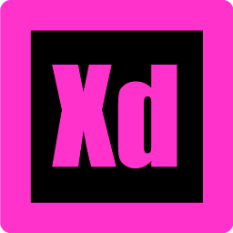
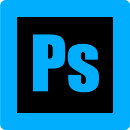

Hvad har jeg lært i de 4 måneder jeg har været i Cphbusiness?
Vi har arbejdet med Adobe programmerne, og følgende er vi blevet introduceret i: Photoshop, Experience design, Dreamweaver og Illustrator.
Dreamweaver
Jeg har lært at kode på Dreamweaver, hvordan man laver struktur og design, med HTML og CSS på Dreamweaver.
Jeg kendte ikke noget til de termer før, jeg havde kun hørt navnene. Jeg vidste ikke hvad de gik ud på. Nu har jeg lært at HTML er strukturen af hjemmesiden, CSS er præsentation, og Java script er opførslen af hjemmesiden.
Det har været meget selvarbejde, hvor jeg har siddet alene og selv lært hvordan strukturen og præsentationen opbygges, især når vi har arbejdet på de forskellige projekter. Jeg lærer ved at prøve mig frem med koderne, og prøve igen og igen indtil jeg er tilfreds med arbejdet.
Jeg har ikke meget kendskab til Java Script endnu, men det ændrer sig i næste semester, hvor fokus vil være på Java Script.
Adobe Experience Design.
Jeg har lært at lave prototyper på Adobe XD. Det er vigtigt for mig, at jeg kan se designet, før jeg begynder at kode. Adobe XD er nem at arbejde med, og det er den program, som jeg har brugt til at lave mock-ups af mine projekter. På den måde når jeg begynder at arbejde med kodningen, så er det nemmere at visualisere designet, end at starte med kodningen fra ingenting.
Photoshop.
Jeg er stadig i gang med at lære Photoshop. De gange jeg har arbejdet med Photoshop, så har jeg søgt hjælp på nettet, hvor jeg har kigget på tutorials. På den måde får jeg mere erfaring med Photoshop. For eksempel har jeg skitseret på papir, taget billede, sætte filter på på Photoshop, så det bliver til et sort og hvidt billede, og det sorte bliver fremhævet, og lavet det om til et ikon på Illustrator. Det er en kompliceret måde at lave et ikon på, men jeg lærer meget mere når jeg gør det selv, end at nogen viser mig det.
Illustrator programmet
På Illustrator har jeg lært at udvikle ikoner, som jeg har brugt på nogle af mine projekter.
Jeg har lært at tegne efter templates, enten ved at skitse selv, eller ud fra andre billeder.
Det er nemmere at lære de forskellige programmer at kende, siden de har lignende egenskaber gennem programmerne.